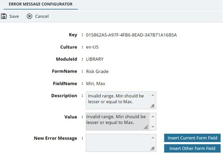
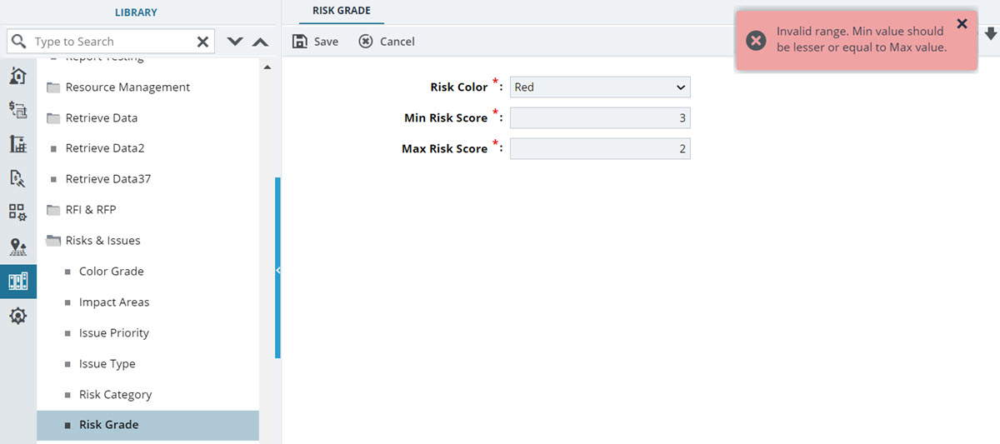
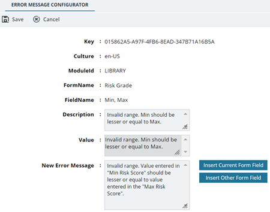

In the navigation pane, expand the Configuration Toolkit folder, and then click Error Message Configurator.
The ERROR MESSAGE CONFIGURATOR list page is displayed.
In the ERROR MESSAGE CONFIGURATOR list page, select the appropriate error message, and then click Edit.
The ERROR MESSAGE CONFIGURATOR page is displayed.
Based on the error message in the Value field, rewrite the error message in the New Error Message field as per your requirement.
Click Save.
The modified error message is displayed in the ERROR MESSAGE CONFIGURATOR list page for the respective record.
Use Case# Max value should be greater than the Min value.
In the ERROR MESSAGE CONFIGURATOR page, the error message that is currently displayed in the Value field is Invalid range. Min value should be lesser or equal to Max value. This error message must be more descriptive and modified to Invalid range. Value entered in "Min Risk Score" should be lesser or equal to value entered in the "Max Risk Score.
The following figure shows the currently displayed error message in the Value field in the ERROR MESSAGE CONFIGURATOR page: Figure 1.

The following figure shows the currently displayed error message in Mind: Figure 2.

The following figure shows the modified error message in the Value field in the ERROR MESSAGE CONFIGURATOR page after modification: Figure 3.

The following figure shows the modified error message in Mind after modification: Figure 4.